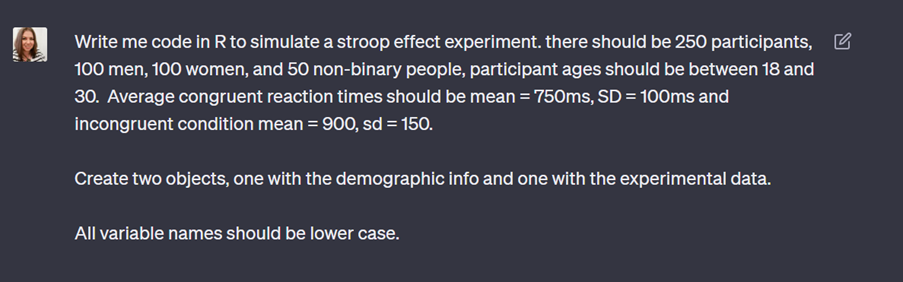
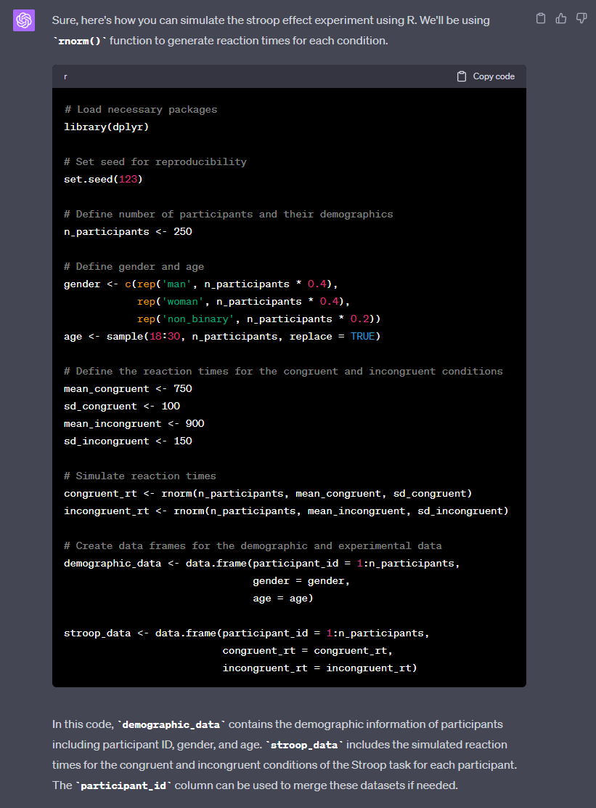
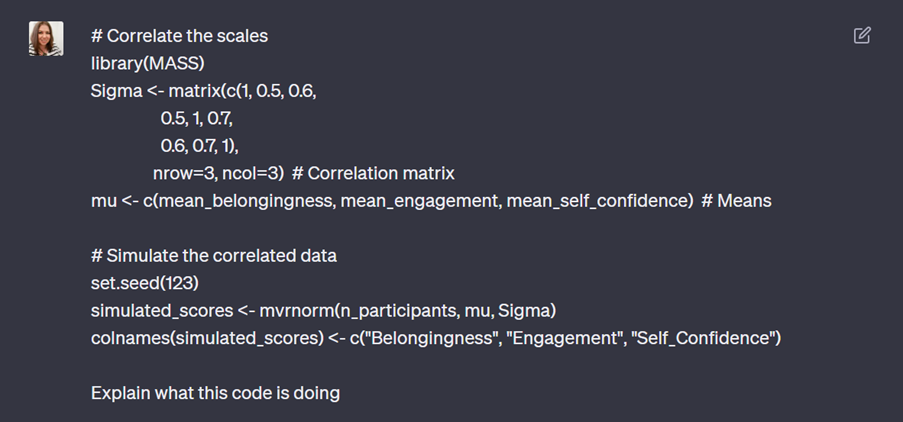
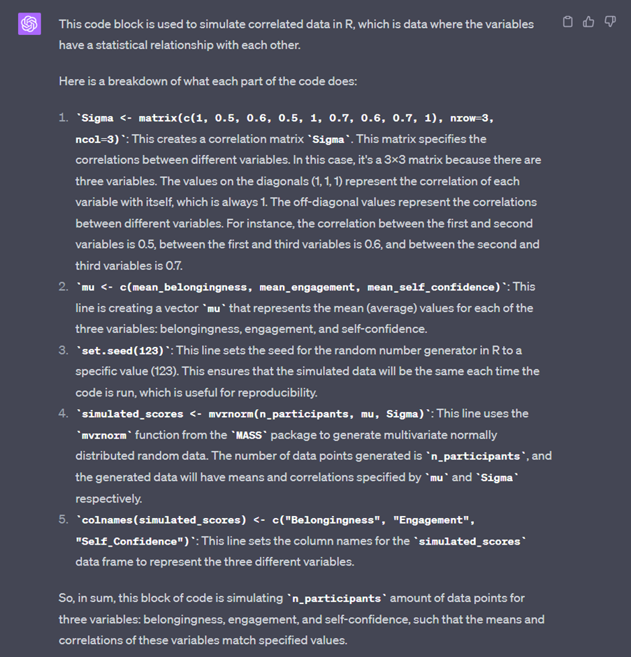
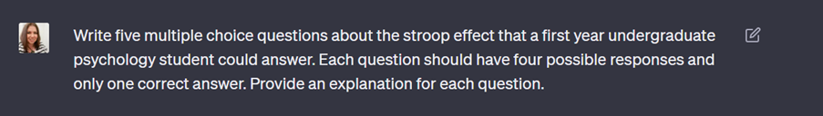
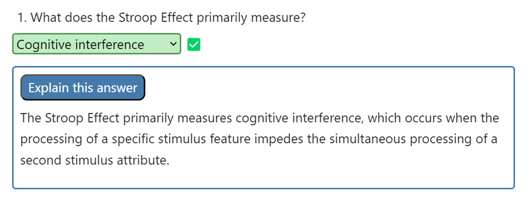
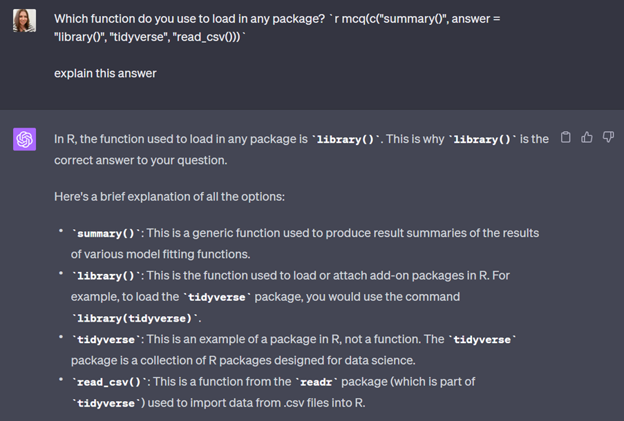

There’s an overwhelming amount of discussion about student uses of ChatGPT that is mainly concerned with academic misconduct. Whilst I understand that it’s a huge problem (and one I am grappling with for my own assignments), I also think it’s useful to have more examples of how we in the teaching and learning community can use tools like ChatGPT to help make our lives a little easier. So, this is the first in what will (probably, if I have time) be a series of blog posts on how I have been using ChatGPT to help design some teaching materials for next year.
For context, I am course lead for a large (700 students) first year introductory psychology course. There are three lectures a week that cover theory and concepts and then practical labs in which students work in smaller groups. In the first semester the labs focus on academic writing and using evidence to support their first substantive piece of coursework which is an essay on the history of psychology, and they also learn data skills and the programming language R. In the second semester, they design a research project in small groups and write a registered report as their coursework, in addition to continuing their data skills and R adventures.
I have been using ChatGPT and GPT-4 with a paid subscription.
This blog will cover how I’ve been using ChatGPT to help rewrite some of our Level 1 data skills teaching materials. Student feedback indicated that the labs and data skills work felt a bit disconnected from the lectures and psychological theory they were learning so I wanted to link them up a bit more.
Additionally, we were using a single dataset for the entire semester. The rationale behind using a single dataset was to allow students to get to know the data well so that they could just focus on coding. However, an unintended consequence to this approach was that because the variable names were the same each week, it encouraged blind copying-and-pasting so when they were finally given a different dataset for the homework, I’d get code that related to the one from the workbook. I could grumble about students not paying attention or I could recognise that the way the course was taught wasn’t encouraging them to pay attention.
There are six chapters of the data skills book in each semester. Typically they work through one on their own and one in the lab, so I knew I wanted three different datasets that could form pairs of chapters. As part of the PsyTeachR curriculum our focus is on using real, messy data but at the very beginning of their data skills journey, I need datasets that have a specific structure, or specific things wrong with them so that I can use them to teach specific skills.
I’ve been using ChatGPT to help me write code to simulate datasets that have the properties I need. I’ve done a little bit of simulation before and I could have figured it out on my own but it would have taken me so much longer:


I’ve found this hugely time-saving although the above example gives an overly simplistic impression of the process. For each simulated dataset I had a back-and-forth of multiple prompts and I’ve learned a lot about how to get it to do what I want, for example, even simple things like I now know to specify that I want lower-case variable names. I always check that the data does actually have the properties I specified and sometimes play around with the values but for the most case, it’s been pretty close to what I had in mind.
What I’ve found most useful is that it has allowed me to try out several different datasets. For the first semester I’ve settled on the Stroop effect, corsi blocks, and a belonging questionnaire (I have been choosing from experiments and surveys available on the wonderful PsyToolkit). But, I also experimented with a lexical-decision task and a need for cognition scale before I decided these didn’t quite fit what I wanted them to learn about data skills.
In the case of data simulation, using ChatGPT has given me the opportunity to pick the best possible dataset for what I’m trying to teach, rather than being constrained by the time it would take to find or simulate it myself. I’ve also used it to teach myself more about how to perform data simulation in R. For the most part, I’ve understood the code it has produced, it’s just not been quite familiar enough to me to do it off the top of my head, but there have been a couple of times where it’s given me something I haven’t done before.


I also use the “regenerate response” feature to see if there are alternative ways of writing the code (there always are), which has been useful for someone who generally takes a strictly tidyverse approach to coding in R.
What ChatGPT hasn’t done is generate any of the ideas for me. I’ve used my knowledge of the course, my students, and what I want to teach them to decide on what each dataset should look like. I’m doing a fairly substantial rewrite of the Level 1 data skills book and it hasn’t even occurred to me to use ChatGPT to help inform what’s going in the book. It might well be able to do this to some degree, but it wouldn’t be my course or my vision and that’s really important to me.
We try to integrate practice testing throughout all our data skills materials using the webexercises package so I have also been using ChatGPT to help me create multiple-choice and fill-in-the-blank questions. I’ve done this to generate theoretical questions, for example:


But I’ve also given it questions I have written myself and asked it to write an explanation for the answer.

I’ve found that the accuracy of the questions and explanations it provides has been pretty good - although I say this aware of the context that this is an intro psych course in which I am asking it to generate fairly concrete factual questions. The big win for me is that I can generate a lot of questions with explanations and feedback in a short amount of time and I think that the rewrite of my data skills book has more practice testing in it as a result. With that said, regardless of whether it’s a theoretical or coding question and regardless of how good it’s been overall, I wouldn’t use anything ChatGPT produces for which I can’t verify the accuracy. When I ask it to write questions or write an explanation, I use the “regenerate response” option frequently so I can pick the best option and as with the simulation code, I’ve rarely been able to take what it gives me without a little bit of editing and a back-and-forth.
These questions are also being used as part of a formative exercise and I’d be reticent use it to generate questions for the summative MCQ exam that assesses the lecture content because I need to be 100% certain the questions are assessing what they’ve been taught. Generating plausible incorrect responses for questions I’ve written is a different matter though, I haven’t done it yet but I think there’s a use case for this. They’re often difficult to get right (let’s be honest, we’ve all written an MCQ where one option is just clearly total nonsense) and I think ChatGPT could help with providing possible options (which you then verify the accuracy of).
Most importantly, when I say I pick the “best option”, yes I am referring to ensuring that what it has given me is correct, but it’s much more than that. I’m also using my knowledge of my students, what they’ve been taught so far, what reading they were supposed to have done, and my knowledge of the context of the materials. These questions are there to help keep them engaged as they work through the chapter mostly independently and to reinforce what they’re learning. I don’t want the questions to be hard or abstract but I also don’t want them to be a waste of time. ChatGPT also isn’t telling me where to put the questions and how many I need.
There’s no prompt I could write that could substitute my knowledge as a teacher. Or I suppose more to the point, there’s no prompt I could write where I would feel that it was still my expertise leading the way. Overwhelmingly my takeaway from using ChatGPT is that if you have prior knowledge and experience, it’s a game-changer for reducing the amount of time some of the grunt work takes. But just as we’re all concerned with students skipping the learning part, I’d also be concerned with educators skipping the creative experience of designing teaching materials/a course from scratch not least because it’s probably my favourite part of my job but because I think the result would be soul-less and stifle innovation and progress (although also, there’s a lot of bad teaching in higher education there so maybe I’ve got a rose-tinted view).